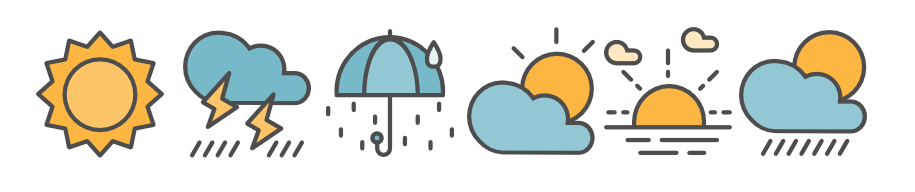

Перейти на главную

Новости сайта:
13.04.2024 Добавлен новый сервис — скорость ветра в Москве
25.09.2026 Подключено автоматическое обновление данных
Разделы сайта:
Скорость ветра в Москве
Погода в Анапе
Раздел о спорте
Архив
Скорость ветра в Москве сейчас
Получаем свежие данные…
Скорость ветра: — м/с
Направление: —
Порывы: до — м/с
Данные на: —